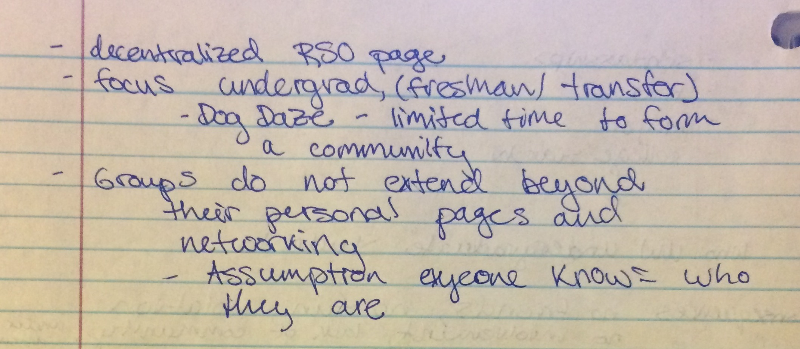

This process book describes the steps my team and I took in designing a solution to a problem having to do with the theme, "Surviving College" for our Design Thinking class. The problem my team and I decided to take on was, "University of Washington students don’t have an easy way to find events in the surrounding Seattle neighborhoods when they are outside their on-campus communities because they lack awareness of when, where, and what events are going on around them."
This website outlines the steps our team took in order to arrive at our final design solution, with a focus on my specific contributions to the project.
I will go through the initial problem decision and solution idea generation processes, the difficulties we experienced as we got more detailed about the solution, and how the final design came about.


Julian Bossiere

Natasha Dietzler

Katrina Ezis
Our initial problem statement
The notes for the initial problem statement
The first day we were grouped with our teammates, the in-class activity was to come up with an information problem related to the theme. This was actually one of the harder parts of the process because the problem statement would determine what kind of solution we'd design in the end. During this period, I struggled because I had a tendency to think of solutions first, and then problems that would accompany that solution.
We threw around a few ideas, not particularly liking any of them, and that's when I thought about what difficulties I've personally experienced as a college student. I remembered the difficulties of exploring the world outside of campus, especially because I am not a Seattle native. I've experienced both looking for a specific type of place or event and just looking for something spontaneous and fun to do and I always had difficulty finding exactly what I wanted. This is how we came upon the event-finding problem, which is what stuck.
We decided that we wanted to focus on trying to help undergraduate students, especially those new to the school, get information about on-campus events.
The next step was to conduct interviews with people who fell into our target audience in order to get a better sense of what kind of solution is needed. I felt that this step was a little constrained because we were to choose our interviewees out of the students from our class, and not everyone in our class deals with our problem.
My teammates and I came up with a set of interview questions, including ones such as, "Have you been to campus-related events, and what was the process of finding these events like?", and "Did the way you find out about events change as you grew accustomed to college life?"
The feedback we got was extremely insightful because it made us realize that many students were not as interested in looking for on-campus events as we'd thought, and that their interests were more off-campus. This was the first pivot point in our design process, and after discussing the results of our individual interviews, we decided to change our focus to off-campus events.
Coming into the ideation stage, I already had a mental image for what the solution could be - a simple website. But we were told not to get attatched to an idea, and to be prepared to discard ideas because the first few we have most likely won't be the final design.
We were given the task of sketching out and describe 40 solution ideas - some wild, some not - per team member. The idea was that in a creative process, like design, quantity can yield quality. Thinking of 40 unique ideas was actually much more difficult than expected. Part of it might've been that, coming into the process with an idea for a website limited my imagination a little bit, but I did my best to break out of that mold.
A small sample of my 40 ideas
I met again with my teammates to discuss which ideas we thought were the top 3 solutions out of our total 120 ideas. We settled on "Event-fill" a website that was divided up into various event categories with a number of different ways to search for events, a calendar web app that links users' calendars with friends making it easy to plan for events, and "One Event Away" a mobile application that allows users to spontaneously find events in their immediate area. From these, we each sketched a low-fidelity prototype. I was in charge of sketching the calendar web app.
This process book describes the steps my team and I took in designing a solution to a problem having to do with the theme, "Surviving College" for our Design Thinking class. The problem my team and I decided to take on was, "University of Washington students don’t have an easy way to find events in the surrounding Seattle neighborhoods when they are outside their on-campus communities because they lack awareness of when, where, and what events are going on around them."
This website outlines the steps our team took in order to arrive at our final design solution, with a focus on my specific contributions to the project.
I will go through the initial problem decision and solution idea generation processes, the difficulties we experienced as we got more detailed about the solution, and how the final design came about.
This process book describes the steps my team and I took in designing a solution to a problem having to do with the theme, "Surviving College" for our Design Thinking class. The problem my team and I decided to take on was, "University of Washington students don’t have an easy way to find events in the surrounding Seattle neighborhoods when they are outside their on-campus communities because they lack awareness of when, where, and what events are going on around them."
This website outlines the steps our team took in order to arrive at our final design solution, with a focus on my specific contributions to the project.
I will go through the initial problem decision and solution idea generation processes, the difficulties we experienced as we got more detailed about the solution, and how the final design came about.
This process book describes the steps my team and I took in designing a solution to a problem having to do with the theme, "Surviving College" for our Design Thinking class. The problem my team and I decided to take on was, "University of Washington students don’t have an easy way to find events in the surrounding Seattle neighborhoods when they are outside their on-campus communities because they lack awareness of when, where, and what events are going on around them."
This website outlines the steps our team took in order to arrive at our final design solution, with a focus on my specific contributions to the project.
I will go through the initial problem decision and solution idea generation processes, the difficulties we experienced as we got more detailed about the solution, and how the final design came about.
This process book describes the steps my team and I took in designing a solution to a problem having to do with the theme, "Surviving College" for our Design Thinking class. The problem my team and I decided to take on was, "University of Washington students don’t have an easy way to find events in the surrounding Seattle neighborhoods when they are outside their on-campus communities because they lack awareness of when, where, and what events are going on around them."
This website outlines the steps our team took in order to arrive at our final design solution, with a focus on my specific contributions to the project.
I will go through the initial problem decision and solution idea generation processes, the difficulties we experienced as we got more detailed about the solution, and how the final design came about.